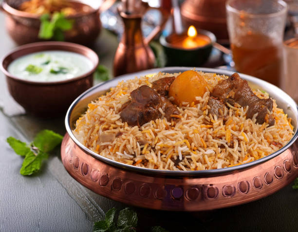

Kacchi Biriyani Recipes

Description
Biryani is a mixed rice dish, mainly popular in South Asia. It is made with rice, some type of meat (chicken, goat, lamb, beef, prawn, or fish) and spices. To cater to vegetarians, in some cases, it is prepared by substituting vegetables or paneer for the meat. Sometimes eggs or potatoes are also added.
Ingredients
- 2 lb mutton
- 1 teaspoon ginger paste
- 2 teaspoon garlic paste
- 3-4 dry red chili
- -3 stick of cinnamon, half inches each
- 4-5 green cardamom
- 1 teaspoon cumin
- ½ teaspoon cloves
- ½ teaspoon mace
- ⅛ teaspoon nutmeg
- 6-8 allspice (optional)
- ½ teaspoon caraway seed (optional)
- 3 tablespoon yogurt
- ¾ cup ghee or butter
- 5 medium potato
- pinch of orange food color (optional)
- ½ cup onion, thinly sliced
- cups basmati or kalijeera rice (I use a 160ml cup to measure my rice. Adjust accordingly)
- 6 cups water
- ½ cup condensed milk
- 2 tablespoon milk
- pinch of saffron
- 10-12 alubokhara (pitted prunes)
- Salt, according to taste
Steps for making the dish
- Steps to prepare the meat:
- Sprinkle some salt on the meat and let stand for 15-20 minutes. Wash the meat and drain all water.
- Take all the spice from red chili to caraway seed, grind.
- ake the pot where biryani will be cooked. Add the meat and yogurt, ground spice mix, garlic and ginger paste and salt. Marinate for anywhere between 30 minutes to overnight(see notes).
- Steps to prepare the onion:
- Add about 3 tablespoon of butter/ghee on a frying pan on medium heat.
- Add very thinly sliced onion and sautee until fragrant and golden brown.
- Steps to prepare the potato:
- Wash, peel and cut the potato in big chinks. Usually into 3 pieces for a medium Idaho potato.
- If using, rub some orange food color to the potato.
- Sprinkle some salt.
- Fry the potatoes until slightly golden on the same pan used for the onion.
- Steps to prepare the rice:
- Wash rice and drain all water.
- Boil 6 cups of water. Add salt.
- Add the rice
- Turn off the stove at the first sight of water boiling again (bubble forming on the water) after adding the rice. Rice will be uncooked at this point
- Drain the rice completely saving the drained hot water in another clean pot.
- Steps to assemble the biryani layers and cook:
- Preheat oven to 350 degrees Fahrenheit.
- Soak the saffron to the milk.
- Add butter/ghee to 1 cup of hot water that was set aside in the rice preparing step.
- Add the prepared potatoes on top of the marinated meat.
- Sprinkle some fried onion.
- Add the alubokhara(prunes), if using.
- Add half the water-butter mixture.
- Layer in the prepared rice.
- Sprinkle the saffron milk.
- Make 4-5 indentations from the rice layer through the potato till the meat.
- Add the condensed milk through the indentations.
- Sprinkle the remaining water-butter mixture.
- Sprinkle the remaining fried onion.
- Add the condensed milk through the indentations.
- Cook in the oven for 1.5 hours.
- Add the hard boiled eggs.
- Serve with salad, kabab and chutney
- Sprinkle the remaining fried onion.
Notes
Mutton can be substituted with lamb or beef, which will give a slightly different taste.
It’s best to use a cooking pot that has a tightly fitted lid.
The easiest way to grind spices is to use a coffee grinder.
When I first started cooking Kachchi biryani, I marinated the meat overnight. I have cooked it with 30 minutes of
marinating with almost the same tenderness. Use your judgment depending on the meat quality and the time you have in
hand.
Condensed milk can be substituted by sprinkling ½ cup of milk to the biryani layers and adding 2 tablespoon of sugar to
the fried golden onion.
I use a 160ml cup that comes with standard rice cookers in the USA to measure rice. Adjust your rice measurementaccordingly.